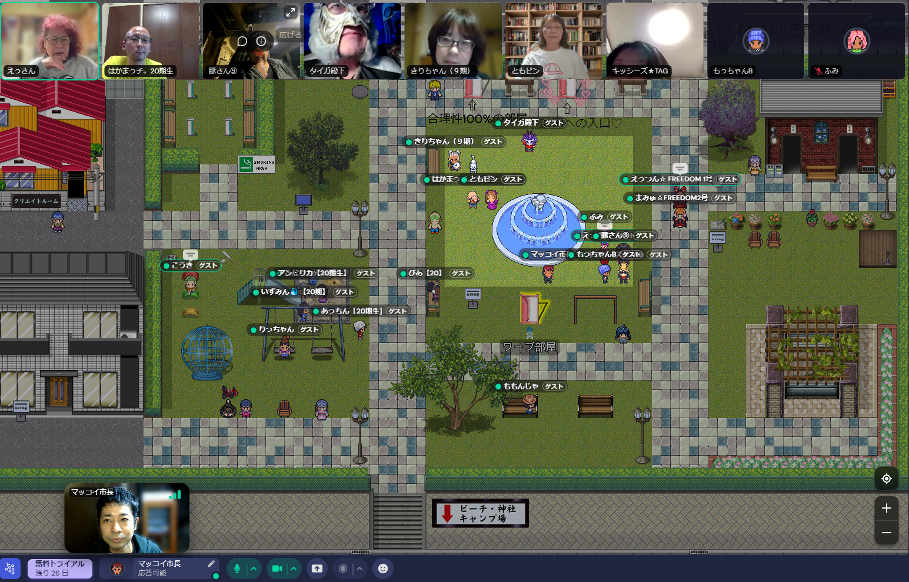
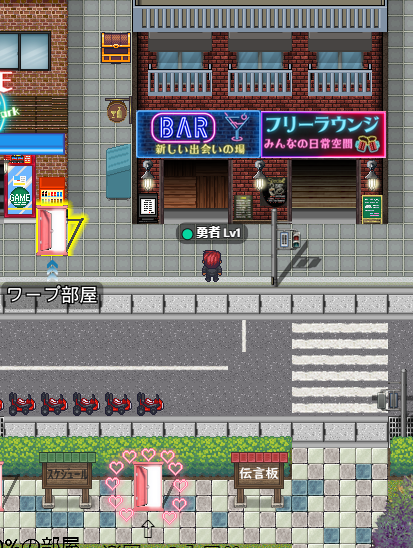
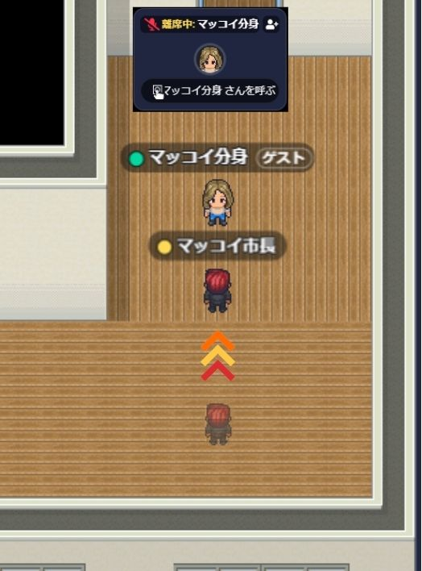
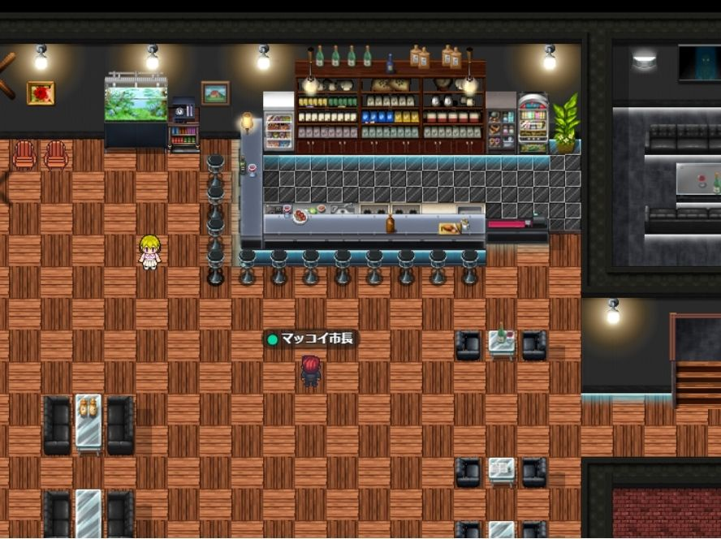
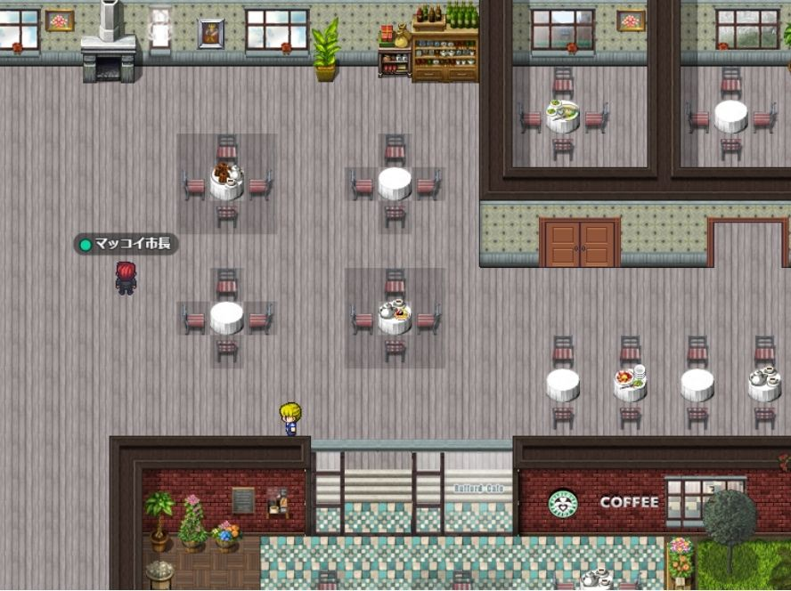
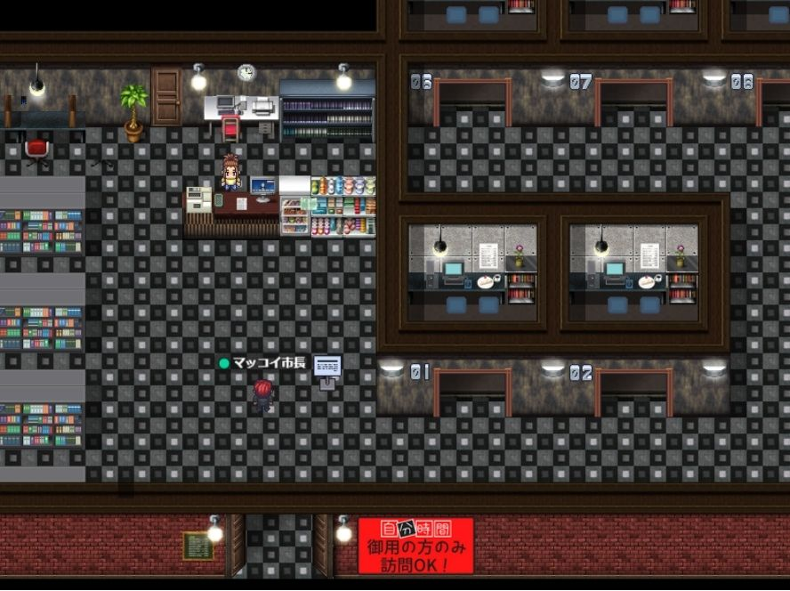
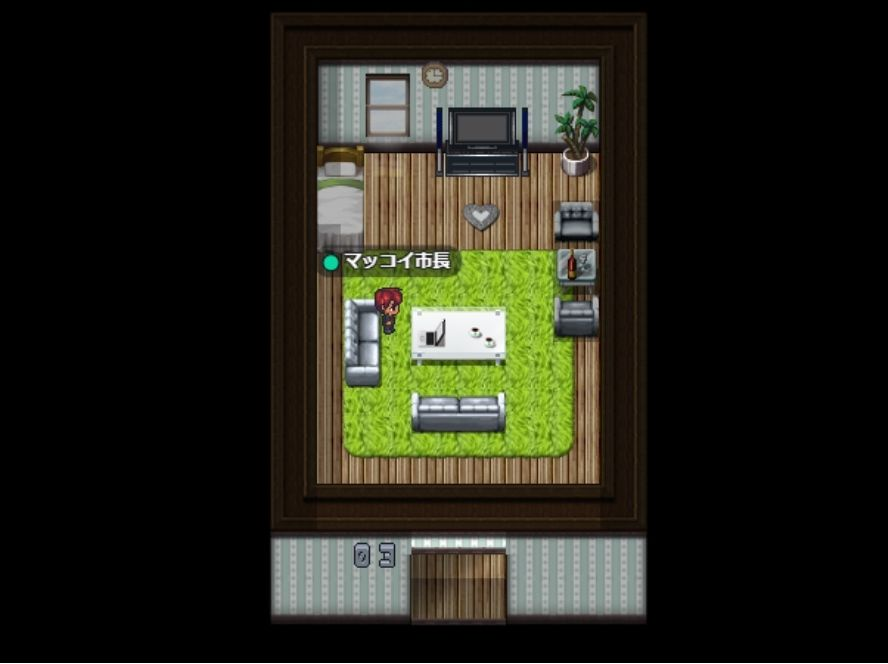

01
ブックマークに保存
まずはページをブックマーク。次回からURLを探さず、すぐに開けます。
- ブラウザのメニューから「ブックマークに追加」
- 名前は「M-CITY」など覚えやすい表記でOK
- よく使うフォルダに入れておくとさらに便利
M-CITYへようこそ
すぐ開けて、迷わず戻れるように。 ブックマーク、お気に入り、ホーム画面追加までをまとめて案内します。

よく使う端末に保存しておくと、次回からのアクセスがぐっと楽になります。
M-CITY簡単アクセスガイド
いつものブラウザから、少しだけ手元に寄せておくための3つの方法です。 PCでもスマホでも、あなたの使いやすい形でどうぞ。
まずはページをブックマーク。次回からURLを探さず、すぐに開けます。
PCならお気に入りバーに固定して、1クリックでアクセスできます。
スマホならホーム画面に置いて、アプリ感覚で開けます。
PCとスマホの両方で使うなら、お気に入りバーとホーム画面追加を組み合わせるのがおすすめです。

M-CITYってなに？
レトロなRPGのような世界で、アバターを動かしながら雑談したり、作業を並走したり、 ちょっとした相談をしたり。SNSでもチャットでもZoomでもない、ちょうど中間の居場所です。
同じ街に住む住民同士が、お互いの時間や距離感を大切にしながら、 ゆるくつながっていける場所。
たまたま近くにいた人と、思いがけない話が始まる。
誰かがいる気配の中で、ひとり作業も心地よく進む。
少し勇気を出して、もやもやを言葉にしてみる。





はじめの一歩
保存方法をひとつ決めておけば、次回からは迷いません。 M-CITYは、あなたのペースでふらっと立ち寄れる街です。